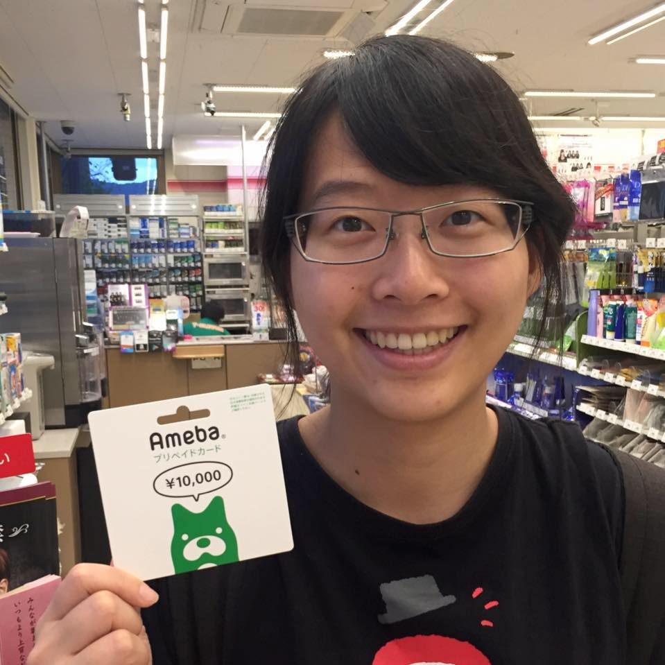
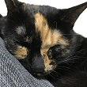

Leave the world a little better than you found it.


I am now a Technology Solutions Professional at Microsoft. I work with larger enterprises, public sectors, and schools to help them design and adopt cloud solution, such as Azure and Enterprise Mobility and Security.
I received my B.S. degree in Engineering Science and Ocean Engineering from National Taiwan University in 2014. My academic background mainly focuses on Engineering, Computer Science, Philosophy and HCI, and my interests across Psychology, Collaboration, and Literature. I am also a Design Thinking leader trained by Stanford d.school coaches during college and have coached hundreds of students including undergrads, graduates, EMBA students and enterprise employees.
I would love to devote myself to promoting human rights and animal rights. I will go on the journey with my passion in both technology and equality to make the world a little bit better than I found it.